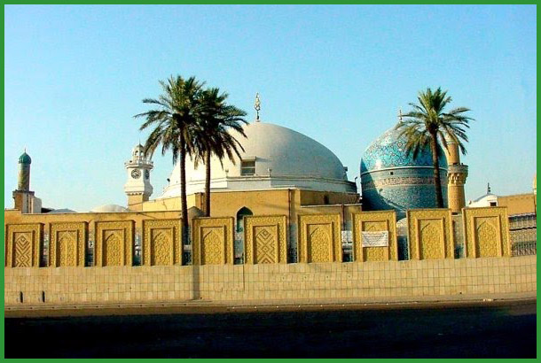
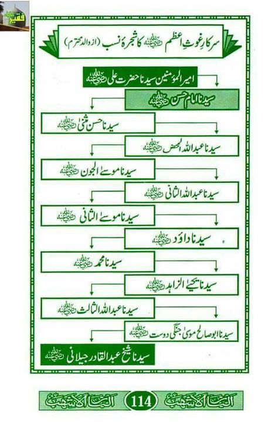

|  |
غوثُ الاعظم علیہ رحمتہ اللہ الاکرم مادر زاد ولی تھے۔ (۱) آپ رحمتہ اللہ تعالٰی علیہ ابھی اپنی ماں کے پیٹ میں تھے اور ماں کو جب چھینک آتی اور اس پر جب وہ اَلْحَمْدُ لِلّٰه کہتیں تو آپ رحمتہ اللہ تعالٰی علیہ پیٹ ہی میں جواباً َيرْحَمُكِ اللّٰه کہتے (الحقائق في الحدائق ص ۱۳۹) (۲) آپ رحمتہ اللہ تعالٰی علیہ یکُم رَمَضَانُ المبارَك بروز پیر صبحِ صادِق کے وَقت دنیا میں جلوہ گر ہوئے اُس وَقت ہونٹ آہِستہ آہِستہ حَرَکت کر رہے تھے اور اللہ اللہ کی آواز آرہی تھی (الحقائق في الحدائق ص ۱۳۹) (۳) جس دن آپ رحمتہ اللہ تعالٰی علیہ کی ولادت ہوئی اُس دن آپ رحمتہ اللہ تعالٰی علیہ کے دِیارِ ولادت جِیلان شریف میں گیارہ سو بچے پیدا ہوئے وہ سب کے سب لڑکے تھے اور سب وليُّ اللّه بنے
Gilani spent his early life in Gilan, the town of his birth. In 1095, at the age of eighteen years, he went to Baghdad. There, he pursued the study of Hanbali law [18] under Abu Saeed Mubarak Makhzoomi and ibn Aqil.[19] He was given lessons on Hadith by Abu Muhammad Ja'far al-Sarraj.[19] His Sufi spiritual instructor was Abu'l-Khair Hammad ibn Muslim al-Dabbas.[20] (A detailed description of his various teachers and subjects are included below). After completing his education, Gilani left Baghdad. He spent twenty-five years as a reclusive wanderer in the desert regions of
ڈوبی ہوئی بارات :۔ ایک بارسرکار بغداد حضور سیدنا غوث پاک رحمۃ اللہ تعالیٰ علیہ دریا کی طرف تشریف لے گئے وہاں ایک ۹۰ سال کی بڑھیا کو دیکھا جو زار و قطار رورہی تھی ،ایک مریدنے بارگاہِ غوثیت رحمۃ اللہ تعالیٰ علیہ میں عرض کیا:’’مرشدی!اس ضعیفہ کا اکلوتا خوبروبیٹاتھا، بیچاری نے اس کی شادی رچائی دولہا نکاح کرکے دلہن کو اسی دریا میں کشتی کے ذریعے اپنے گھر لارہاتھاکہ کشتی الٹ گئی اوردولہا دلہن سمیت ساری بارات ڈوب گئی، اس واقعہ کو آج بارہ سال گزر چکے ہیں مگر ماں کاجگر ہے ،بے چاری کاغم جاتا نہیں ہے،یہ روزانہ یہا ں دریا پر آتی ہے اور بارات کونہ پاکر رودھوکر چلی جاتی ہے ۔‘‘ حضورِ غوث اعظم رحمۃ اللہ تعالیٰ علیہ کو اس ضعیفہ پر بڑا ترس آیا، آپ رحمۃ اللہ تعالیٰ علیہ نے اللہ عزوجل کی بارگاہ میں ہاتھ اٹھا دیئے، چند منٹ تک کچھ ظہورنہ ہوا،بے تاب ہوکر بارگاہِ الٰہی عزوجل میں عرض کی: ’’یااللہ عزوجل!اس قدر تاخیر کی کیاوجہ ہے؟‘‘ ارشادہوا:’’اے میرے پیارے!یہ تاخیر خلافِ تقدیرنہیں ہے ،ہم چاہتے توایک حکم ’’کُنْ‘‘سے تمام زمین و آسمان پیدا کر دیتے مگر بمقتضائے حکمت چھ دن میں پیدا کئے، بارات کو ڈوبے ہوئے بارہ سال ہوچکے ہیں،اب نہ وہ کشتی باقی رہی ہے نہ ہی اس کی کوئی سواری، تمام انسانوں کا گوشت وغیرہ بھی دریائی جانور کھاچکے ہیں، ریزہ ریزہ کو اجزائے جسم میں اکٹھاکرواکردوبارہ زندگی کے مرحلے میں داخل کر دیا ہے اب ان کی آمد کاوقت ہے۔‘‘ ابھی یہ کلام اختتام کو بھی نہ پہنچاتھاکہ یکایک وہ کشتی اپنے تمام ترسازوسامان کے ساتھ بمع دولہا،دلہن وباراتی سطح آب پر نمودار ہوگئی اور چندہی لمحوں میں کنارے آلگی، تمام باراتی سرکار بغداد رحمۃ اللہ تعالیٰ علیہ سے دعائیں لے کرخوشی خوشی اپنے گھر پہنچے، اس کرامت کو سن کربے شمارکفّار نے آ آکر سیدنا غوث اعظم رحمۃ اللہ تعالیٰ علیہ کے دستِ حق پرست پراسلام قبول کیا۔b
Sayings of Shaikh Abd al-Qadir al-Jīlānī Malfūzāt, Holland, Muhtar (translator). S. Abdul Majeed & Co, Kuala Lumpur (1994) ISBN 1-882216-03-2. Fifteen letters, khamsata ashara maktūban / Shaikh Abd Al-Qādir Al-Jīlānī. Translated from Persian to Arabic by Alī usāmu ́D-Dīn Al-Muttaqī. Translated from Arabic into English by Muhtar Holland. Kamsata ašara maktūban. First edition. ʿAlāʾ al-Dīn, ʿAlī B., ʿAbd al-Malik al- Muttaqī al-Hindī (about 1480–1567) and Muhtar Holland (1935–). Al-Baz publications, Hollywood, Florida. (1997) ISBN 1-882216-16-4. Jalā Al-Khawātir: a collection of forty-five discourses of Shaikh Abd Al-Qādir Al-Jīlānī, the removal of cares. Chapter 23, pg 308. Jalā al-Khawātir, Holland, Muhtar (1935–) (translator). Al-Baz publications, Fort Lauderdale, Florida. (1997) ISBN 1-882216-13-X. The sultan of the saints: mystical life and teachings of Shaikh Syed Abdul Qadir Jilani / Muhammad Riaz Qadiri Qadiri, Muhammad Riyaz. Gujranwala, Abbasi publications. (2000) ISBN 969-8510-16-8. The sublime revelation: al-Fath ar-Rabbānī, a collection of sixty-two discourses / Abd al-Qādir al- Jīlānī, Second edition. al-Rabbānī, al-Fath. Al-Baz publications, Fort Lauderdale, Florida. (1998). ISBN 1-882216-02-4. Al-Ghunya li-talibi tariq al-haqq wa al-din, (Sufficient provision for seekers of the path of truth and religion), Parts one and two in Arabic. Al-Qadir, Abd, Al-Gaylani. Dar Al-Hurya, Baghdad, Iraq, (1988). Al-Ghunya li-talibi tariq al-haqq wa al-din, (Sufficient provision for seekers of the path of truth and religion.) in Arabic. Introduced by Al-Kilani, Majid Irsan. Dar Al-Khair, Damascus, Bairut, (2005). Encyclopædia Iranica, Bibliotheca Persica PresS, ISBN 1-56859-050-4. Geography of the Baz Ahhab second reading in the biography of Sheikh Abdul Qadir Jilani, and the birthplace of his birth according to the methodology of scientific research (MA in Islamic History from Baghdad University in 2001) of Iraqi researcher Jamal al-Din Faleh Kilani, review and submission of the historian Emad Abdulsalam Rauf،Publishe Dar Baz Publishing, United States of America, 2016, translated by Sayed Wahid Al-Qadri Aref.
ریبوں اورمحتاجوں پر ر :۔ شیخ عبداللہ جبائی رحمۃ اللہ تعالیٰ علیہ بیان کرتے ہیں کہ “ایک مرتبہ حضورغوث پاک رحمۃ اللہ تعالیٰ علیہ نے مجھ سے ارشاد فرمایا کہ ’’میرے نزدیک بھوکوں کو کھانا کھلانا اور حسنِ اخلاق کامل زیادہ فضیلت والے اعمال ہیں۔” پھرارشاد فرمایا: “میرے ہاتھ میں پیسہ نہیں ٹھہرتا، اگر صبح کو میرے پاس ہزار دینار آئیں تو شام تک ان میں سے ایک پیسہ بھی نہ بچے(کہ غریبوں اور محتاجوںمیں تقسیم کردوں اوربھوکے لوگوں کو کھانا کھلادوں۔) (قلائد الجواهر، ملخصاًص۸) ان کے درسے کوئی خالی جائے ہوسکتا نہیں ان کے دروازے کھلے ہیں ہرگدا کے واخاوت کی ایک مثال :۔
آپ رحمۃ اللہ تعالیٰ علیہ والد ماجد کی نسبت سے حسنی ہیں سلسلۂ نسب یوں ہے سیّد محی الدین ابو محمد عبدالقادر بن سیّد ابو صالح موسیٰ جنگی دوست بن سیّد ابو عبداللہ بن سیّد یحیٰی بن سید محمد بن سیّد داؤد بن سیّد موسیٰ ثانی بن سیّد عبداللہ بن سیّد موسیٰ جون بن سیّد عبداللہ محض بن سیّدامام حسن مثنیٰ بن سیّد امام حسن بن سیّدنا علی المرتضی رضی اللہ تعالیٰ عنہم اجمعین اور آپ رحمۃ اللہ تعالیٰ علیہ اپنی والدہ ماجدہ کی نسبت سے حسینی سیّد ہیں۔
